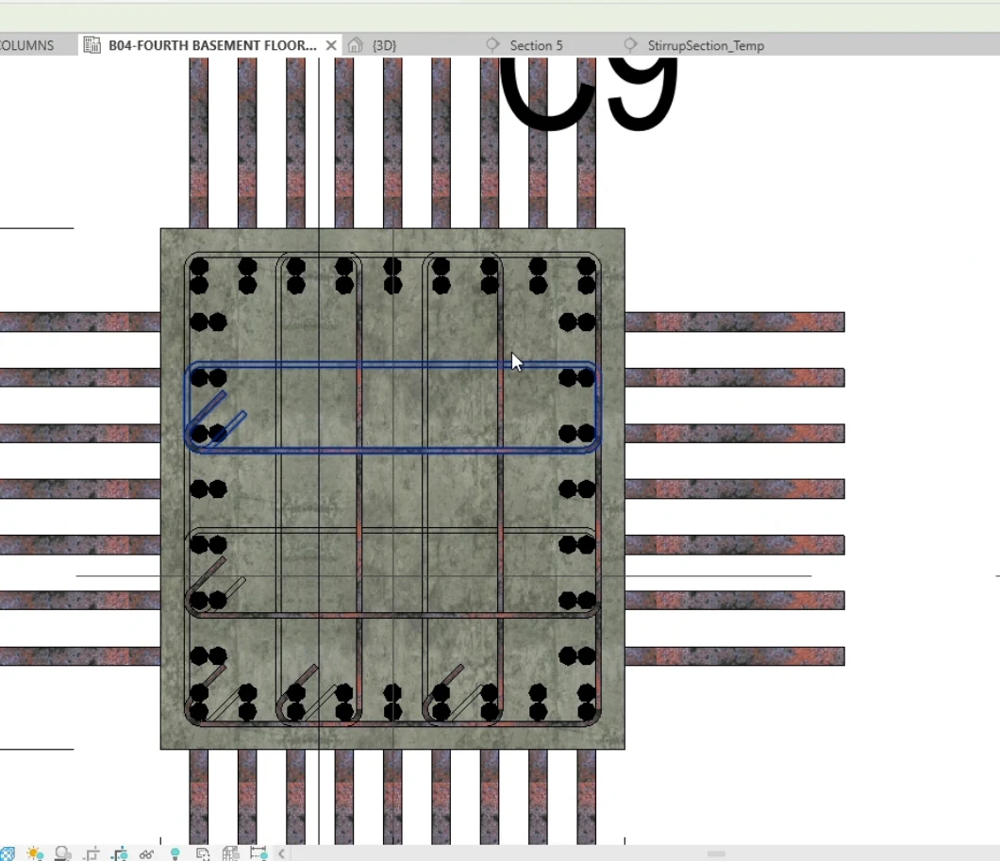

Structural Rebar · Revit Add-in
Column Reinforcement
Set up the column cage. Apply it to matching columns.
Configure longitudinal bars, foundation starters, and stirrup zones for rectangular, square, or circular concrete columns in Revit.
Review one representative cage before working in batches
Longitudinal bars, starter bars, and stirrup zones have different settings. Build the reference arrangement, check existing hosted reinforcement, and use the reviewed setup on matching columns.
Rectangular, square & circular columns
configure shape-appropriate reinforcement from one workflow
Independent main-bar control
set bar type and count in Length and Width directions, or configure circular bar layouts
Optional second reinforcement layers
enable independently in Length, Width, or as a second circular layer
Top & bottom bar extensions
use fixed lengths or bar-diameter multiples with independent lap/start offsets
Foundation starters / dowels
control cover, minimum leg length, embedment factor, lap-start offset, and fixed or diameter-based top extensions
Three-zone stirrup distribution
critical bottom, normal middle, and critical top zones with separate spacing controls
Egyptian Code-based or user-defined critical-zone lengths, plus optional foundation/dowel stirrups with independent spacing
Flexible targeting
select columns from the model or type list, then filter instances by parameter and value
Reference-to-batch workflow
create main bars, prepare a temporary section for stirrup/crosstie setup, check existing hosted rebar, then apply to one or all matching columns
Manual Revit vs. Column Reinforcement
| Task | Manual Revit workflow | With Column Reinforcement |
|---|---|---|
| Configure the main bars and starters | Lay out bars by face or around the perimeter, then set extensions and foundation embedment. | Set bar counts, optional layers, extensions, and starter details for the column shape. |
| Set stirrup zones | Calculate zone lengths, then place and space stirrups for each zone. | Use Egyptian Code-based or user-defined zone lengths and configure the three spacing zones. |
| Repeat the reviewed cage | Rebuild or copy reinforcement, then verify hosts and existing bars. | Prepare the reference section, check hosted rebar, and apply to matching columns. |
Detailing longitudinal bars, starters, and three stirrup zones
Column geometry and reinforcement requirements are already defined. Both workflows include setting up the reference cage and checking the modeled result. These are planning estimates. Actual times depend on the model and setup.

One rectangular column
Manual in Revit
20–25 min
Model longitudinal bars, starters, and stirrups, then review the cage.
Column Reinforcement
1–2 min
Configure the reference cage, generate bars and stirrups, then review.
18–24 min estimated savings
Twenty similar columns
Manual in Revit
120–180 min
Reuse the cage where possible, then verify hosts and reinforcement on each column.
Column Reinforcement
3–5 min
Prepare the reference arrangement, apply to matching columns, and sample-check the result.
115–177 min estimated savings
See how Column Reinforcement fits your workflow
Tell us what you’re modeling or reviewing in Revit. We can walk through the workflow and discuss compatibility, licensing, and support. Use Request Package to add the package to your request list.